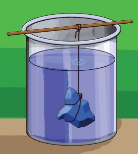
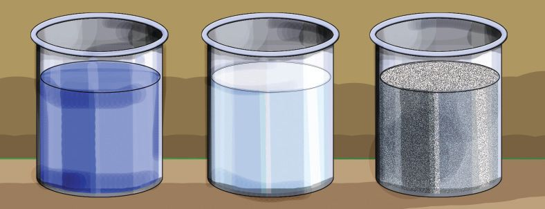
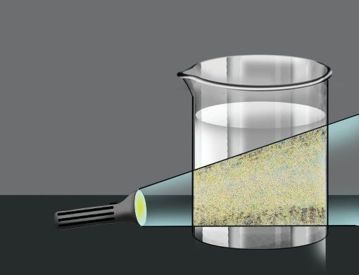

ചിത്രസ്ഥിൺ കാണുന്നത് വിവിധ-തരം ലായനിക-ളാണ്. ലായനികƒ ഉപയോഗിത്ഥുന്ന
നിരവധി സμയ്യഭത്മƒ ഉ≠-√ോ. ചില ലായനികƒ പന്തിക-യിൺ നൺകിയിരിത്ഥുന്നു.
ഇവയിലെ ലീനം, ലായകം എന്നിവ ഏതെ√ാം അവ-ÿ-കളിലാണെന്ന് തിരിണ്ണറി™്
പന്തിക പൂയ്യസ്ഥിയാത്ഥൂ.
ലായനിയുടെ അവ-ÿയും ലായക-സ്ഥി‚െ അവ-ÿയും തΩിൺ എഗ്ലെന്നിലും ബ'-മു≠ോ? മിത്ഥവാറും ലായനിക-ളിൺ, ലായക-സ്ഥി‚െ ഭൗതികാവÿ തന്നെയായിരിത്ഥും ലായനിയുടെയും ഭൗതികാവ-ÿ.
ഒരു ലായനിയിലെ ഘടക-ത്മളിൺ ലായകം, ലീനം എന്നിവ ഏതാണെന്ന്
തീരുമാനിത്ഥുന്നത് എപ്രകാര-മാണ്?
സാധാര-ണയായി കുറ™ അളവിലു≈ ഘടകം ലീനമായും കൂടിയ അളവിലു≈ ഘടകം ലായക-മായും കണത്ഥാത്ഥ-∏െടുന്നു. ജലീയ ലായനിക-ളിൺ
ഏത് അളവിലായാലും ജലം തന്നെയാണ് ലായകം.
ലായനിക-ളുടെ ചില സവിശേഷ-തകƒ പരിശോധിത്ഥാം.
ലായനിയുടെ ഗാഢത (ഇീിരലിൃേമശേീി ഈള ഈെഹൗശേീി)
താഴെ കൊടുസ്ഥ പ്രവയ്യസ്ഥനം ചെയ്തു നോത്ഥാം.
ര≠ു •ാസുക-ളിൺ ഒരേ അളവിൺ ജലം എടുത്ഥുക.
ഒരു ലായനിയുടെ ഗാഢത പ്രസ്താവിത്ഥാ≥ പല അളവുകളും ഉപയോഗിണ്ണുവരു- ഒന്നാ- മ - ഏസ്ഥ- ത ഇൺ ഒന്നോ ര≠ോ തരി പൊന്താസ്യം
പെയ്യമാംഗ-നേ‰് ഇടുക. നാലോ അഞ്ചോ തരികƒ ര≠ാന്നു-≠്.
മസ്ഥെ •ാസിലും ഇടുക.
മാസ് പെയ്യസെ-‚േജ് (ങമ ഐുലൃരലിമേഴല)
ലായനിയിൺ ലയിണ്ണുചേയ്യന്ന ലീനസ്ഥി‚െ ര≠ു •ാസുക-ളിലെയും ലായനിക-ളിലെ നിറവ്യത്യാസം
അളവ് ശതമാന-സ്ഥിൺ പ്രസ്താവിത്ഥുന്ന നിരീക്ഷിത്ഥുക.
രീതിയാണിത്. അതായത് നൂറ് ഗ്രാം ലായര≠ു ലായനികളും തΩിൺ, നിറസ്ഥിൺ വ്യത്യാസ-∏െനിയിൺ എത്ര ഗ്രാം ലീനം അടത്മിയിരിടാ≥ എഗ്ലാണ് കാരണം?
ത്ഥുന്നുവെന്ന് പ്രസ്താവിത്ഥുന്നു.
ലീനസ്ഥി‚െ അളവ് കൂടുത-ലു≈ ലായനിത്ഥ് ഗാഢത
മാസ് പെയ്യസെ-‚േജ് =
കൂടുത-ലാണെന്ന് പറയാം.
ഗാഢത പ്രസ്താവിത്ഥാം
പായ്യട്സ് പെയ്യ മില്യച്ച (ുാ)
ഒരു നി›ിത മാസ് ലായനിയെ ദശലക്ഷം
(ഒരു മില- ്യ ച്ച) ഭാഗ- ത്മ - ള ആ- ത്ഥ ഇ- യ ആൺ
അതിൺ എത്ര ഭാഗമാണ് ലീനം എന്ന്
സൂചി-∏ിത്ഥുന്ന അളവാണ് പായ്യട്സ് പെയ്യ
മില്യച്ച. വളരെ കുറ™ അളവില-ടത്മിയി- ര ഇ- ത്ഥ ഉന്ന ലീന- സ്ഥ ഇ‚െ സാന്നി- ധ ്യം
പ്രസ്താവിത്ഥാനാണ് സാധാരണ ഉുാ
ഉപയോഗിത്ഥുന്നത്. ഉദാഹരണസ്ഥിന്
കുടി- എവ- ≈ - സ്ഥ ഇൺ അനു- വ - ദ - ന ഈ- യ - മ ആയ
ക്ലോറി‚െ അളവ് 4 ഉുാ ആണ്.
ലായനിയുടെ ഗാഢത സൂചി-∏ിത്ഥാനു≈
മ‰ു ചില തോതു- ക - ള ആണ് വോള്യം
പെയ്യസെ- ഏ‚- ജ ് (ഢീഹൗാല ഉലൃരലിമേഴല) ,
മൊളാ- ര ഇ- ‰ ഇ (ങീഹമൃശ്യേ) , മൊളാ- ല ഇ- ‰ ഇ
(ങീഹമഹശ്യേ) , നോയ്യമാ- ല ഇ‰ി (ചീൃാമഹശ്യേ)
മുതലായ-വ.
214 അടി-ÿാന-ശാസ്ത്രം ഢകകക
ഒരു നി›ിത അളവ് ലായനിയിൺ ലയിണ്ണു ചേയ്യന്ന
ലീനസ്ഥി‚െ അളവാണ് ലായനിയുടെ ഗാഢത. ഒരു
ലായനിയിൺ ലീനസ്ഥി‚െ അളവ് കുറവാണെന്നിൺ
അത് നേയ്യസ്ഥ ലായനിയും കൂടുത-ലാണെന്നിൺ ഗാഢലായനിയുമാണ്.
പൂരിതലായനി (ടമൗേൃമലേറ ടീഹൗശേീി)
വ്യത്യസ്ത പദായ്യഥത്മƒ ഒരേ ലായക-സ്ഥിൺ ലയിത്ഥുന്നത് ഒരേ അളവിലാണോ? ഒരു പ്രവയ്യസ്ഥനം ചെയ്തുനോത്ഥാം.
ര≠ു ബീത്ഥറുക-ളിൺ 50 ആഘ വീതം ജലം എടുത്ഥുക.
100 ഗ്രാം വീതം പൊടിണ്ണ ഉ∏ും (സോഡിയം ക്ലോറൈഡ്)
അമോണിയം ക്ലോറൈഡും എടുത്ഥുക. ഒരു ബീത്ഥറിലെ
ജല- സ്ഥ ഇൺ ഉ∏് കുറേ- എബ്ല- യ ആയി ലയി- ∏ ഇ- ത്ഥ ഉ- ക .
പ്രവയ്യസ്ഥനം തുടരുക. ഉ∏് വീ≠ും ലയി- ത്ഥ ആസ്ഥ
അവÿ സംജാ- ത - മ ആവുന്നു. പരമാവധി ലീനം
ലയിണ്ണുചേയ്യന്ന ഇസ്ഥരം ലായനിയാണ് പൂരിത-ലായനി.
ഒരു നി›ിത താപനില-യിൺ പരമാവധി ലീനം ലയിണ്ണുചേയ്യന്നാൺ കിന്തുന്ന
ലായനിയാണ് പൂരിത-ലായ-നി.
പൂരി- ത - ല ആ- യ നി ഉ≠ാ- ക ഉ- ന്ന - ത ഇ- ന ഉ- മ ഉ- ബ്ബ ഉ≈ അവ- ÿ - യ ഇൺ ലായ- ന ഇയെ
അപൂരിത ലായനി എന്ന് വിളിത്ഥുന്നു. അപൂരിത-ലായ-നിത്ഥ് വീ≠ും
ലീനസ്ഥെ ലയി-∏ിത്ഥാ≥ കഴിയും.
പാത്രസ്ഥിൺ ബാത്ഥിയായ കറിയു-∏ി‚െ അളവ് കണത്ഥാത്ഥുകയാണെന്നിൺ
ഉ-∏ി‚െ പൂരിതലായനി തøാറാത്ഥാ≥ വേ≠ി വന്ന ഉ-∏ി‚െ അളവ്
ക≠െസ്ഥാമ-√ോ.
ര≠ാമസ്ഥെ ബീത്ഥറിലേത്ഥ് അൺ∏ാൺ∏-മായി അമോണിയം ക്ലോറൈഡ്
ചേയ്യസ്ഥ് ഇളത്ഥിത്ഥൊ≠് മേൺ∏-റ™ പരീക്ഷണം ആവയ്യസ്ഥിത്ഥുക. അമോണിയം ക്ലോറൈഡി‚െ പൂരിത-ലായനി തയാറാത്ഥാമ√ോ?
ഇതിനു -വേ≠ിവന്ന അമോണിയം ക്ലോറൈഡി‚െ അളവ് ഉ-∏ിനേത്ഥാƒ
കൂടുതലോ കുറവോ? ക≠െസ്ഥൂ.
ഒരേ സാഹച-ര്യസ്ഥിൺ ഒരേ ലായക-സ്ഥിലെ പൂരിത-ലായനി തയാറാത്ഥാ≥
വേ≠ി വന്ന ഉ∏ി-‚െയും അമോണിയം ക്ലോറൈഡി‚െയും അളവ് വ്യത്യസ്തമാണെന്ന് ബോധ്യമായി√േ.
ഒരു നി›ിത താപനില-യിൺ 100 ഗ്രാം ലായകസ്ഥെ പൂരിത-മാത്ഥാ≥ ആവശ്യമായ ലീനസ്ഥി‚െ ഗ്രാമിലു≈ അളവാണ് ആ ലീനസ്ഥി‚െ ലേയത്വം
(ടീഹൗയശഹശ്യേ).
അതിപൂരിത ലായനി (ടൗുലൃമൗേൃമലേറ ഈെഹൗശേീി)
നേരസ്ഥേ തയാറാത്ഥിയ പൂരിതലായനിക-ളിൺ വീ≠ും അതേ ലീനത്മƒ
കൂടുത-ലായി ലയി-∏ിത്ഥാ-≥ കഴിയുമോ?
$ താപനില വ്യത്യാസ-∏െടുബ്ബോƒ ലയിണ്ണുചേരുന്ന ലീനസ്ഥി‚െ അളവ്
വ്യത്യാസ-∏െടുമോ?
ഉ-∏ി‚െ പൂരിത-ലായനിയിൺ അൺ∏ം കൂടി ഉ∏് ചേയ്യസ്ഥു ചൂടാത്ഥിനോത്ഥൂ.
എഗ്ലാണ് സംഭ- വ ഇ- ത്ഥ ഉ- ന്ന ത് ? ലയി- ത്ഥ ഉ- ന്ന ഉ≠ോ? അമോ- ണ ഇയം
ക്ലോറൈഡി‚െ പൂരിതലായനിയും ഇതുപോലെ ചെയ്തുനോത്ഥൂ.
ഈ ലായനികളെ അനത്ഥാതെ സാധാരണ താപനില-യിലേത്ഥ്, സാവധാനം
തണു-∏ിത്ഥുക.
ര≠ു ലായനികളും നിരീക്ഷിത്ഥുക. ലീനത്മƒ അവക്ഷിപ്ത-∏െടുന്നു≠ോ?
ഇസ്ഥര-സ്ഥിൺ പൂരിത-മാകാ≥ ആവശ്യമായതിലും അധികം ലീനം ലയിണ്ണു
ചേയ്യന്ന ലായനിയെ അതിപൂരിത ലായനി എന്ന് പറയുന്നു.
$
ഒരേ സാഹച-ര്യസ്ഥിൺ ഒരു നി›ിത അളവ് ലായക-സ്ഥിൺ വിവിധ
പദായ്യഥത്മളുടെ പൂരിതലായനികƒ നിയ്യമിത്ഥുബ്ബോƒ ലയിണ്ണുചേരുന്ന
ലീനത്മളുടെ അളവ് ഒരുപോലെയാണോ? ക≠െസ്ഥാ≥ ശ്രമിത്ഥൂ.
പന്തിക 15.2
ചില ലവണ-ത്മളുടെ ലേയത്വം, താപനില- എന്നിവയുമായി ബ'∏െടുസ്ഥി
തയാറാത്ഥിയ ഗ്രാഫ് നൺകിയിരിത്ഥുന്നു (ചിത്രം 15.1).
ഗ്രാഫ് വിശക-ലനം ചെയ്ത് ചുവടെ കൊടുസ്ഥിന്തു-≈വ ക≠െസ്ഥൂ.
$
$
$
$
താപനില കൂടുബ്ബോƒ ലേയത്വം ഏ‰വും കുടുന്ന പദായ്യഥം ഏതാണ്?
40ഇ താപനില-യിൺ ഒരേ ലേയത്വമു≈ ലവണ-ത്മƒ ഏതൊത്ഥെയാണ്?
താപനില കൂടുബ്ബോƒ ലേയത്വം കുറയുന്ന പദായ്യഥമേത്?
താപ- ന ഇല പദായ്യഥ- ത്മ ളുടെ ലേയ- ത ്വസ്ഥെ എത്മനെ സ്വാധീ- ന ഇത്ഥുന്നുവെന്ന് ഉദാഹ-രണ-സഹിതം ഒരു കുറി∏് തയാറാത്ഥുക.
0
്യം
ഐ
ന
ഏ
ട്ര‰
്
താഴെ- കൊടുസ്ഥ പ്രവയ്യസ്ഥനം ചെയ്തുനോത്ഥാം.
30ഇ താപനില-യിൺ 100 ഗ്രാം (100 ആഘ) ജലസ്ഥിൺ കോ∏യ്യ സƒഫേ-‰ി‚െ
പൂരിത-ലായനി തയാറാത്ഥാ≥ എത്ര ഗ്രാം കോ∏യ്യ സƒഫേ‰് വേ≠ിവരും?
പന്തിക-യിൺ നിന്നു ക≠െസ്ഥുക.
25 ആഘ ജലസ്ഥിൺ കോ∏യ്യ സƒഫേ-‰ി‚െ പൂരിതലായനി
ഡ്
ആറൈ
ക്ല
ഏതയാറാത്ഥുക. ഈ ലായനി ചൂടാത്ഥി കൂടുതൺ ലീനം
്യം
ന്താസ
ആ
പ
എചേയ്യസ്ഥ് അതിപൂരിത-ലായനി ഉ≠ാത്ഥുക. ലായനി സാധാസോഡിയം ക്ലോറൈഡ്
രണ താപനില-യിലേത്ഥ് തണു-∏ിത്ഥുക. അതിനുശേഷം ഒരു
‰്
ആറേ
ക്ല
ഏചെറിയ കഷണം കോ∏യ്യ സƒഫേ‰് ഒരു നൂലിൺ കെന്തി
്യം
ആസ
ന്ത
ആ
ചിത്രസ്ഥിൺ കാണുന്നതുപോലെ ലായനിയിൺ തൂത്ഥിയിപെ
ടുക (ചിത്രം 15.2). കോ∏യ്യ സƒഫേ-‰ി‚െ ചെറിയ പരൺ
കാൺസ്യം സƒഫേ‰്
20
40
80
100 എടുത്ഥാ≥ ശ്ര≤ിത്ഥുക. അൺ∏ സമയ-സ്ഥിനുശേഷം എഗ്ലു
60
താപനില 0ഇ
മാ‰-മാണ് കാണുന്നത്? ഒരു ദിവസ-സ്ഥിനുശേഷം വീ≠ും
ചിത്രം 15.1
ആസ
ആന്ത
പെ
10 20 30 40 50 60 70
ലേയത്വം/ഗ്രാം/100 ഗ്രാം ജലം
വളരുന്ന പര-ൺ (ഏൃീംശിഴ രൃ്യമേെഹ)
216 അടി-ÿാന-ശാസ്ത്രം ഢകകക
Page 57
Figure fig_ch04_p057_01 (Page 57)

Figure fig_ch04_p057_02 (Page 57)

Figure fig_ch04_p057_03 (Page 57)
നിരീക്ഷിത്ഥുക. എഗ്ലു മാ-‰-മാണ് ഉ≠ായ-ത്? നിരീക്ഷണം കുറിണ്ണുവയ്ത്ഥൂ.
അതിപൂരിത ലായനിയിൺ ലീനസ്ഥി‚െ ഒരു ക്രില്ലൺ ഇന്താൺ കൂടുത-ലായി
ലയിണ്ണ ലീനം ചെറിയ ക്രില്ലലുക-ളായി അവക്ഷിപ്ത-∏െടുന്നതു കാണാം.
ക്രില്ലൺ- വളയ്യന്നു വലുതായ-തായും കാണാം. എഗ്ലായിരിത്ഥാം കാരണം?
ഇതേ പരീക്ഷണം മ‰ൊരു ലവണ-സ്ഥി‚െ പൂരിതലായനി ഉപയോഗിണ്ണ്
ചെയ്തുനോത്ഥൂ.
മിശ്രിത-ത്മളുടെ വയ്യഗീക-രണം
ലായനിക-ളെ√ാം മിശ്രിത-ത്മളാണ√ോ. എന്നിൺ എ√ാ മിശ്രിത-ത്മളും ഒരേ
സ്വഭാവ-മു-≈-താണോ?
ഒരു മിശ്രിത-സ്ഥി‚െ എ√ാഭാഗസ്ഥും ഘടക-ത്മƒ ഒരേ അനുപാത-സ്ഥിലാണ്
ചേയ്യന്നി- ര ഇ- ത്ഥ ഉന്ന - എത- ന്ന ഇൺ ആ മിശ്രി- ത സ്ഥെ ഏകാ- fl ക (ഒീാീഴലിലീൗ)െ
മിശ്രിതം എന്ന് പറയുന്നു. എ√ാ ലായനികളും ഏകാ-flക മിശ്രിത-ത്മളാണ്.
ഉദാ: പഞ്ചസാരലായനി, ഉ∏ുലായ-നി, വായു, ആഭരണനിയ്യമാണ-സ്ഥിനുപയോഗിത്ഥുന്ന സ്വയ്യണം.
ഇസ്ഥരം മിശ്രിത-ത്മളിലെ ഘടകത്മളെ നന്മനേത്രം കൊ≠് വേയ്യതിരിണ്ണു
കാണാ≥ കഴിയി-√.
ഒരു മിശ്രിത-സ്ഥി‚െ എ√ാ -ഭാഗസ്ഥും ഘടക-ത്മƒ ഒരേ അനുപാത-സ്ഥില√
ചേയ്യന്നിരിത്ഥുന്നതെന്നിൺ ആ മിശ്രിതസ്ഥെ ഭിന്നാ-flക (ഒലലേൃീഴലിലീൗ)െ
മിശ്രിതം എന്ന് പറയുന്നു.
ഉദാ: ഉ∏ും മണലും, ചെളിവെ-≈ം, മവ്വെവ്വയും വെ≈വും ചേയ്യന്ന മിശ്രിതം.
ഇവയിൺ ഘടകകണത്മളെ നന്മനേത്രംകൊ≠് വേയ്യതിരിണ്ണു കാണാ≥
കഴിയും.
ഒരു പരീക്ഷണം ചെയ്തുനോത്ഥാം.
മൂന്ന് ബീത്ഥറുക-ളിലായി ഒരേ അളവിൺ ജലം എടുത്ഥുക. ഒന്നാമ-സ്ഥേതിൺ
കോ∏യ്യ സƒഫേ‰് തരികളും ര≠ാമ-സ്ഥേതിൺ പാലും മൂന്നാമ-സ്ഥേതിൺ
ചോത്ഥുപൊടിയും ചേയ്യസ്ഥു നന്നായി ഇളത്ഥുക. ബീത്ഥറുകƒ അൺ∏-സമയം അനത്ഥാതെ വയ്ത്ഥുക (ചിത്രം 15.3).
ബീത്ഥയ്യ ˛ 1
കോ∏യ്യ സƒഫേ‰് + ജലം
ബീത്ഥയ്യ ˛ 2
പാൺ + ജലം
ചിത്രം 15.3
ബീത്ഥയ്യ ˛ 3
ചോത്ഥുപൊടി + ജലം
അടി-ÿാന-ശാസ്ത്രം ഢകകക 217
Page 58
Figure fig_ch04_p058_01 (Page 58)
ഏതു ബീത്ഥറിലാണ് പദായ്യഥം അടി-™ത്?
ഒന്നുകൂടി ഇളത്ഥിയ ശേഷം മൂന്ന് ബീത്ഥറുക-ളിലേത്ഥും വശത്മളിലൂടെ
ശ‡മായ പ്രകാശബീം കടസ്ഥിവിടുക. നിരീക്ഷണം പന്തിക 15.3 ൺ ടിത്ഥ്
ചെøുക.
നിരീക്ഷണ-ത്മƒ
ബീത്ഥയ്യ 1
ബീത്ഥയ്യ 2
ബീത്ഥയ്യ 3
പ്രകാശ-പാത കാണാ≥ സാധിത്ഥുന്നത്.
കണിക-കƒ കാണാ≥ കഴിയുന്നത്.
പന്തിക 15.3
ഫിൺന്തയ്യ പേ∏യ്യ ഉപയോഗിണ്ണ് മൂന്ന് മിശ്രിത-ത്മളും അരിണ്ണുനോത്ഥൂ.
ബീത്ഥയ്യ ഒന്നിലേത് ഒരു യഥായ്യഥ ലായനിയാണ്. ബീത്ഥയ്യ ര≠ിലേത് ഒരു
കൊളോയിഡ് ആണ്. ബീത്ഥയ്യ മൂന്നി-േലത് സസ്പെ≥ഷ≥ എന്ന വിഭാഗസ്ഥിൺ∏െടുന്നു. ഓരോ മിശ്രിത-സ്ഥി-‚െയും നിത്മƒ നിരീക്ഷിണ്ണ സവിശേഷത-കƒ പന്തിക∏െടുസ്ഥുക (പന്തിക 15.4).
പ്രവയ്യസ്ഥനം
ലായനി
കൊളോയിഡ്
ഫിൺന്തയ്യ പേ∏യ്യ ഉപ ഘടകത്മളെ അരിണ്ണ്
-യോ--ഗിണ്ണ് അരിത്ഥുന്നു. വേയ്യതിരിത്ഥാ≥ കഴിയി√. .................................
ശ‡-മായ പ്രകാശ
പ്രകാശ-സ്ഥി‚െ
പ്രകാശ-സ്ഥി‚െ
ബീം കടസ്ഥിവിടുന്നു. പാത ദൃശ്യമ√.
പാത ദൃശ്യമാണ്.
അനത്ഥാതെ
വയ്ത്ഥുന്നു.
.................................
.................................
പന്തിക 15.4
നിരീക്ഷണ-ത്മളിലെ വ്യത്യാസ-സ്ഥിനു കാരണം അതിലെ കണിക-കളുടെ
വലു∏-സ്ഥിലു≈ വ്യത്യാസ-മാണ്.
ഏതു ബീത്ഥറിലെ മിശ്രിതസ്ഥിലാണ് കണിക-കളുടെ വലു∏ം ഏ‰വും കുറവ്?
എത്മനെയാണ് ഇത് തിരിണ്ണറി-™ത്?
ഏതു ബീത്ഥറിലെ മിശ്രിതസ്ഥിലാണ് കണിക-കളുടെ വലു∏ം ഏ‰വും കൂടിയിരിത്ഥുന്നത്?
ലായനിക-ളിൺ ലീനകണിക-കളുടെ വലി∏ം വളരെ കുറവായ-തിനാലാണ്
കണിക-കƒ നന്മനേത്രത്മƒകൊ≠് കാണാ≥ കഴിയാസ്ഥത്. ഇവയിലെ കണികകƒ അതിസൂക്ഷ്മത്മളായ-തിനാൺ അവയ്ത്ഥ് പ്രകാശസ്ഥെ വിസരി-∏ിത്ഥാ≥
കഴിയുന്നി-√. അതുകൊ≠് പ്രകാശപാത കാണാ≥ കഴിയുന്നി-√.
കൊളോയിഡുക-ളിൺ അൺ∏ം കൂടി വലിയ ലീന (കൊളോയിഡൺ) കണികക-ളാണ് ഉ≈-ത്. അതിനാൺ ഈ കണിക-കƒ പ്രകാശസ്ഥെ വിസരി-∏ിത്ഥുകയും പ്രകാശപാത ദൃശ്യമാവുകയും ചെøുന്നു.
218 അടി-ÿാന-ശാസ്ത്രം ഢകകക
Page 59
Figure fig_ch04_p059_01 (Page 59)

Figure fig_ch04_p059_02 (Page 59)
സസ്പെ≥ഷനുക-ളിലാവന്തെ, നന്മനേത്രത്മƒകൊ≠് കാണാ≥ കഴിയുന്ന
അത്രയും വലി-∏-മു-≈-വയാണ് സസ്പെ≥ഷ≥ കണിക-കƒ. അവയിൺ പതിത്ഥുന്ന പ്രകാശം ഒന്തൊത്ഥെ പ്രതിപ-തിത്ഥുക-യാണു ചെøുന്നത്. ഗുരുത്വാകയ്യഷണം കാരണം അവ ക്രമേണ അടിയുകയും ചെøുന്നു.
ചില മിശ്രിത-ത്മƒ തന്നിരിത്ഥുന്നത് വിലയിരുസ്ഥൂ.
മഷി, ചെളിവെ-≈ം, മൂടൺമ-™്, അഗ്ലരീക്ഷവായു, പാൺ, പഞ്ചസാരലായനി, നേയ്യസ്ഥ ക™ിവെ-≈ം.
ഇവയെ യഥായ്യഥ ലായനി, കൊളോയിഡ്, സസ്പെ≥ഷ≥ എന്നിത്മനെ
തരംതിരിത്ഥൂ (പന്തിക 15.5).
ലായനി
കൊളോയിഡ്
സസ്പെ≥ഷ≥
പന്തിക 15.5
സിനിമാതിയേ-‰-റുക-ളിലും സ്മായ്യന്ത് ക്ലാസ്റൂമുക-ളിലും പ്രൊജക്ടറിലൂടെ
ചിത്രത്മƒ പ്രദയ്യശി-∏ിണ്ണുകൊ-≠ിരിത്ഥുബ്ബോƒ പൊടിപ-ടല-ത്മƒ ഉയയ്യന്നാൺ
പ്രകാശ-പാത വ്യ‡-മായി കാണാ≥ കഴിയുന്നത് ശ്ര≤ിണ്ണിന്തു≠ോ? എഗ്ലാണ്
ഇതിനു കാരണം?
ഒരു പരീക്ഷണം ചെയ്തുനോത്ഥാം.
ഒരു ബീത്ഥറിൺ 50 ആഘ ജലമെടുസ്ഥ് അതിൺ ര≠് ഗ്രാം- സോഡിയം തയോസƒഫേ‰് (ഹൈ∏ോ) ചേയ്യസ്ഥ് ലായനി തയാറാത്ഥുക. ചിത്രസ്ഥിൺ (ചിത്രം
15.4) കാണുന്നതുപോലെ ബീത്ഥയ്യ പ്രകാശപാത-യിൺ ക്രമീക-രിണ്ണശേഷം
ര≠ോ മൂന്നോ തു≈ി നേയ്യ∏ിണ്ണ ഹൈഡ്രോ- ഏക്ലാ- റ ഇക് ആസിഡ്
ചേയ്യസ്ഥിളത്ഥുക. കുറണ്ണു സമയം നിരീക്ഷിത്ഥുക. നിരീക്ഷണം എഴുതൂ.
സോഡിയം തയോ- സ ƒഫേ‰ും ഹൈഡ്രോ- ഏക്ലാ- റ ഇക് ആസിഡും തΩിൺ പ്രവയ്യസ്ഥിത്ഥുബ്ബോƒ സƒഫയ്യ അവക്ഷിപ്ത-∏െടുന്ന രാസപ്രവയ്യസ്ഥനം നടത്ഥുന്നു. പ്രവയ്യസ്ഥനസ്ഥിനു മുബ്ബ് ഈ മിശ്രിതം ലായനിയാണ്. നിമിഷത്മƒത്ഥകം സƒഫയ്യ ആ‰-ത്മƒ കൂടുത-ലായി വേയ്യതിരിയു- ഏബ്ബാƒ അവ കൂടി- ഏണ്ണയ്യന്ന് വലു∏ം കൂടിയ കണികകളായി ലായനി കൊളോയിഡ് രൂപസ്ഥിലാവുകയും
പ്രകാശപാത ദൃശ്യമാവുകയും ചെøുന്നു. സമയം കഴിയുഗ്ലോറും കൂടുതൺ സƒഫയ്യ കണത്മƒ വേയ്യതിരിയുകയും
കണി- ക - ക - ള ഉടെ വലു∏ം വയ്യധി- ത്ഥ ഉ- ക യും ചെøു- ന്ന ഉ.
ചിത്രം 15.4
അത്മനെ മിശ്രിതം സസ്പെ-≥ഷ≥ ആയി മാറുന്നു.
നാം നിത്യജീവിത-സ്ഥിൺ ഉപയോഗിത്ഥുന്ന മിശ്രിത-ത്മളിൺനിന്നു ലായനികƒ, കൊളോയിഡുകƒ, സസ്പെ≥ഷനുകƒ എന്നിവ പന്തിക-∏െടുസ്ഥൂ.
കൊളോയിഡുകളും സസ്പെ≥ഷനുകളും ഏകാ-flക മിശ്രിത-ത്മളാണോ?
ടീണ്ണറുടെ സഹായ-സ്ഥോടെ ചയ്യണ്ണചെയ്തു ക≠െസ്ഥൂ.
കൃത്രിമ-പാനീയ-ത്മƒ
നാം ഉപയോഗിത്ഥുന്ന പല ജ്യൂസുകളും കൊളോയിഡ് രൂപസ്ഥിലു≈
പാനീയത്മളാണ്. ഇസ്ഥര-സ്ഥിലു≈ ജ്യൂസുകളും പാനീയ-ത്മളും മായ്യത്ഥ-‰ിൺ
ലഭ്യമാണ്. ദീയ്യഘകാലം സൂക്ഷിണ്ണാലും ഇവ അടിയുന്നി-√ എന്നതു ശ്ര≤ിണ്ണിന്തു≠ോ?
എത്മനെയായിരിത്ഥാം ഇവ അടിയാതെ കുറേത്ഥാലം നിലനിയ്യസ്ഥുന്നത്?
ഇതിനായി പല -വസ്തുത്ഥളും പാനീയ-ത്മളിൺ ചേയ്യത്ഥാറു-≠െന്നറിയാമോ?
ഇവയെ ല്ലെബിലൈസ-റുകƒ എന്ന് പറയുന്നു.
ഇവയിൺ പലതും ആരോഗ്യസ്ഥിന് ഹാനിക-രമാണ്. ഇസ്ഥരസ്ഥിലു≈
രാസവസ്തുത്ഥƒ കൃത്രിമ-പാനീയ-ത്മളിൺ ചേയ്യത്ഥുന്നത് അപകടകര-മ√േ?
കൃത്രിമപാനീയ-ത്മƒ തുടയ്യണ്ണയായി ഉപയോഗിത്ഥുന്നത് ശരീരസ്ഥെ എത്മനെയൊത്ഥെയാണ് ബാധിത്ഥുക? കൂന്തുകാരോടൊസ്ഥു ചേയ്യന്ന് ഒരു അനേ്വഷണാ-flക പഠനം നടസ്ഥിയാലോ?
എവിടെ നിന്നെ√ാം വിവര-ത്മƒ ശേഖരിത്ഥാം?
$ അധ-്യാപ-കയ്യ
$ ഡോക്ടയ്യമായ്യ
$ ഗവേഷ-കയ്യ
$ ആധികാരിക-ഗ്രമ്ലത്മƒ
$ ഇ‚യ്യനെ‰്
$ ആരോഗ്യപ്രവയ്യസ്ഥകയ്യ
പഠന-സ്ഥിലെ ക≠െസ്ഥലുക-ളുടെ വെളിണ്ണസ്ഥിൺ എഗ്ലെ√ാം തുടയ്യപ്രവയ്യസ്ഥനത്മളാവാം?
കൂന്തുകാരുമായി ആലോചിണ്ണും യു‡ിപൂയ്യവം ചിഗ്ലിണ്ണും ആസൂത്രണം
ചെøൂ.
പ്രധാന പഠന-നേന്തത്മളിൺ പെടുന്നവ
$
$
$
$
$
$
വ്യത്യസ്ത അവ-ÿ-കളിലു≈ ലായനികƒ തിരിണ്ണറിയാ≥ കഴിയുന്നു.
വിവിധ ലായനിക-ളിലെ ലായകം, ലീനം എന്നിവ തിരിണ്ണറി™് പന്തിക∏െടുസ്ഥാ≥ കഴിയുന്നു.
ലായനിയുടെ ഗാഢതയുടെ അടി-ÿാന-സ്ഥിൺ പൂരിത-ലായ-നി, അതിപൂരിത ലായനി എന്നിവ നിയ്യമിത്ഥാ≥ കഴിയുന്നു.
മിശ്രിത-ത്മളെ ഏകാ-fl-കം, ഭിന്നാ-flകം എന്ന് തരംതിരിത്ഥാ-≥
കഴിയുന്നു.
നിത്യജീവിത-സ്ഥിൺ ഉപയോഗിത്ഥുന്ന മിശ്രിത-ത്മളെ ലായനി,
കൊളോയിഡ്, സസ്പെ≥ഷ≥ എന്നിത്മനെ തരംതിരിത്ഥാ≥ കഴിയുന്നു.
കൃത്രിമ-പാനീയ-ത്മ-ƒ, ആഹാര-പദായ്യഥത്മƒ എന്നിവ-യിലെ ആരോഗ്യസ്ഥിന് ഹാനിക-രമായ രാസവ-സ്തുത്ഥƒ തിരിണ്ണറി™് അവ ഉ≠ാത്ഥുന്ന ആരോഗ-്യപ്രശ്നത്മളെത്ഥുറിണ്ണു≈ ബോധവൺത്ഥരണ പ്രവയ്യസ്ഥനത്മളിൺ ഏയ്യ∏െടാ≥ കഴിയുന്നു.